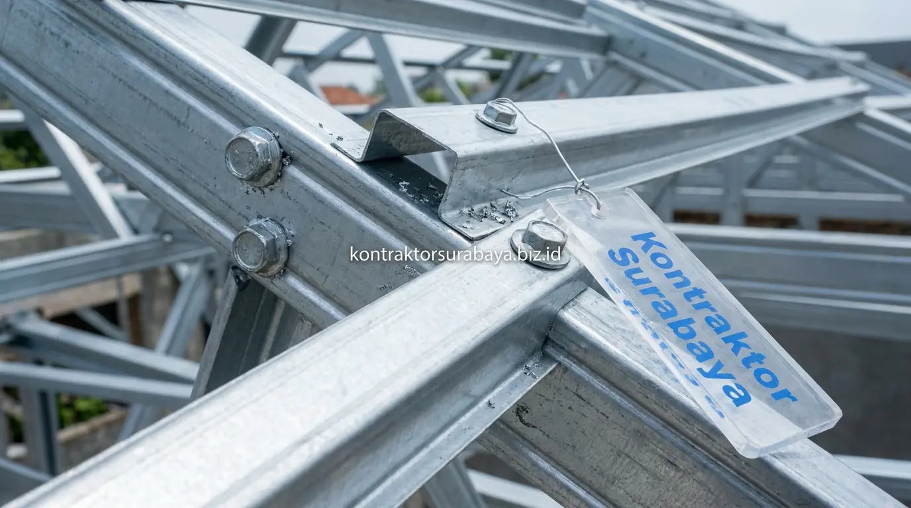

Rangka atap kayu yang sudah berumur puluhan tahun rentan mengalami kerusakan akibat rayap, terutama di wilayah Sidoarjo dengan tingkat kelembapan udara yang cukup tinggi. Kondisi ini tidak hanya membuat tampilan plafon menjadi tidak rapi, tetapi juga menyimpan risiko struktural yang bisa berbahaya bagi keselamatan penghuni sewaktu-waktu.
Bagian berikut membahas tanda kerusakan rangka kayu, alasan baja ringan dipilih sebagai pengganti, tahapan penggantian, hingga faktor biaya yang perlu diperhitungkan sebelum mempercayakan pekerjaan ini kepada jasa renovasi profesional.
1. Bagaimana Mengetahui Rangka Atap Kayu Sudah Lapuk?
Permukaan kayu yang terasa rapuh saat ditekan, munculnya serbuk halus di sekitar kuda-kuda, genteng yang mulai melorot, dan bunyi berderak di plafon saat angin kencang adalah empat tanda utama rangka atap kayu sudah lapuk dan perlu segera diganti.
Rangka atap kayu yang mulai lapuk biasanya ditandai dengan permukaan kayu yang terasa rapuh saat ditekan, munculnya serbuk halus di sekitar kuda-kuda, atau genteng yang mulai melorot akibat rangka penyangga tidak lagi kokoh. Bunyi berderak pada bagian plafon saat angin kencang juga sering menjadi indikasi awal bahwa struktur kayu sudah kehilangan kekuatannya. Pengecekan langsung oleh tim ahli tetap diperlukan untuk memastikan tingkat kerusakan sebelum menentukan langkah perbaikan yang tepat.

2. Mengapa Baja Ringan Dipilih sebagai Pengganti Rangka Kayu?
Baja ringan tidak dapat dimakan rayap, tidak lapuk akibat kelembapan, memiliki bobot lebih ringan dibanding kayu solid, dan mengurangi beban pada struktur dinding sehingga menjadi pilihan utama pengganti rangka atap kayu lapuk di Sidoarjo.
Baja ringan menjadi pilihan utama untuk mengganti rangka atap kayu karena materialnya tidak dapat dimakan rayap maupun lapuk akibat kelembapan, berbeda dengan kayu yang membutuhkan perawatan anti rayap secara berkala. Bobotnya yang jauh lebih ringan dibanding kayu solid juga mengurangi beban yang harus ditopang oleh struktur dinding di bawahnya, sehingga risiko keretakan pada bagian penyangga dapat ditekan setelah penggantian dilakukan. Lihat ragam proyek renovasi atap yang sudah kami kerjakan di halaman galeri proyek.
| Aspek | Rangka Kayu | Rangka Baja Ringan |
|---|---|---|
| Ketahanan terhadap Rayap | Rentan, perlu anti rayap berkala | ✅ Tidak dapat dimakan rayap |
| Ketahanan terhadap Kelembapan | Bisa lapuk dalam jangka panjang | ✅ Tahan lembap dengan coating |
| Bobot Material | Lebih berat | ✅ Lebih ringan, kurangi beban |
| Kecepatan Pemasangan | Lebih lama, perlu tenaga kayu | ✅ Lebih cepat dengan sistem fabrikasi |
| Perawatan Jangka Panjang | Perlu perawatan rutin | ✅ Minim perawatan |
3. Tahapan Proses Mengganti Rangka Atap Kayu ke Baja Ringan
Pengecekan kondisi rangka lama, pembongkaran bertahap, pemasangan rangka baja ringan, dan pemasangan kembali penutup atap adalah empat tahapan utama dalam proses penggantian rangka atap kayu ke baja ringan.
- Pengecekan Kondisi Rangka Lama: Untuk menentukan bagian yang masih bisa dipertahankan dan bagian yang harus dibongkar seluruhnya. Tahap ini juga mencakup pengecekan kondisi murplat dan ring balok yang menjadi tumpuan rangka atap sebelum proses pembongkaran dimulai.
- Pembongkaran Genteng dan Rangka Kayu Secara Bertahap: Per bagian atap dilakukan untuk meminimalkan risiko paparan cuaca langsung pada interior rumah. Pembongkaran bertahap memungkinkan penghuni tetap menggunakan sebagian besar area rumah selama proses pengerjaan berlangsung.
- Pemasangan Rangka Baja Ringan: Sesuai perhitungan bentang dan kemiringan atap yang direncanakan oleh tim ahli. Ketepatan perhitungan jarak reng dan profil kuda-kuda baja ringan sangat menentukan kekuatan keseluruhan struktur atap yang baru.
- Pemasangan Kembali Penutup Atap: Dan pengecekan kerapatan setiap sambungan untuk memastikan tidak ada celah yang berpotensi menjadi sumber kebocoran. Pengecekan dilakukan secara menyeluruh sebelum pekerjaan dinyatakan selesai.
4. Apakah Genteng Lama Bisa Dipakai Kembali pada Rangka Baja Ringan?
Genteng lama yang kondisinya masih baik umumnya masih dapat dipasang kembali pada rangka baja ringan, selama jenis genteng tersebut sesuai dengan spesifikasi reng yang digunakan dalam konstruksi baru.
Namun, genteng yang sudah retak atau porinya mulai rapuh akibat usia sebaiknya diganti bersamaan dengan proses penggantian rangka, agar tidak menimbulkan masalah kebocoran baru setelah pekerjaan rangka selesai. Biaya pergantian genteng yang dijadikan satu paket dengan penggantian rangka umumnya lebih efisien dibanding melakukan dua proyek terpisah dalam jangka waktu berdekatan. Dapatkan estimasi biaya yang akurat melalui layanan RAB & estimasi biaya kami.
5. Faktor yang Memengaruhi Biaya Penggantian Atap di Sidoarjo
Luas atap, jenis profil baja ringan yang dipilih, jenis genteng yang digunakan, dan kondisi rangka lama yang perlu dibongkar adalah empat faktor utama yang memengaruhi biaya penggantian rangka atap kayu ke baja ringan di Sidoarjo.
- Luas Atap: Secara langsung memengaruhi kebutuhan material dan jumlah tenaga kerja yang diperlukan, sehingga semakin besar atap maka semakin besar pula anggaran yang perlu disiapkan secara keseluruhan.
- Jenis Profil Baja Ringan yang Dipilih: Menentukan ketebalan dan kekuatan rangka yang akan dipasang. Profil dengan ketebalan yang lebih tinggi biasanya lebih mahal namun memberikan daya tahan yang lebih baik terhadap beban angin dan beban penutup atap jenis tertentu.
- Jenis Genteng yang Digunakan: Baik genteng lama yang dipakai kembali maupun genteng baru yang dipilih sebagai pengganti turut memengaruhi total anggaran proyek, karena harga dan berat genteng bervariasi signifikan antar jenis.
- Kondisi Rangka Lama yang Perlu Dibongkar: Rangka kayu yang sudah sangat lapuk atau memiliki bentuk yang kompleks memerlukan waktu dan tenaga lebih untuk dibongkar secara aman, yang berdampak langsung pada biaya jasa pengerjaan.
Atap dengan bentang lebar atau bentuk yang lebih kompleks umumnya memerlukan anggaran lebih besar dibanding atap dengan bentuk sederhana, sehingga survei langsung ke lokasi membantu memberikan estimasi biaya yang lebih akurat sebelum proyek dimulai.
6. Kesalahan yang Perlu Dihindari saat Mengganti Rangka Atap
Menunda perbaikan meski tanda kerusakan sudah terlihat, memilih profil baja ringan di bawah standar ketebalan, dan tidak memeriksa kondisi plafon serta talang air adalah tiga kesalahan umum yang sering ditemui saat penggantian rangka atap.
- Menunda Perbaikan Meski Tanda Kerusakan Sudah Terlihat Jelas: Meningkatkan risiko kerusakan yang meluas, karena rangka kayu yang semakin lapuk dapat mulai mempengaruhi struktur di sekitarnya termasuk ring balok dan bagian plafon yang terhubung dengannya.
- Memilih Profil Baja Ringan dengan Ketebalan di Bawah Standar: Demi menekan biaya berisiko menghasilkan rangka atap yang tidak mampu menahan beban angin kencang secara optimal, terutama di kawasan yang rawan cuaca ekstrem seperti wilayah Sidoarjo bagian timur yang dekat pantai.
- Tidak Memeriksa Kondisi Plafon dan Talang Air: Yang mungkin ikut terdampak selama proses pembongkaran berlangsung dapat mengakibatkan masalah tambahan yang tidak terdeteksi, sehingga pemeriksaan menyeluruh sebelum dan sesudah pengerjaan adalah langkah yang tidak boleh dilewatkan.
"Penggantian rangka atap kayu ke baja ringan bukan sekadar pekerjaan teknis—ini adalah investasi keamanan jangka panjang yang melindungi seluruh isi rumah dari risiko yang bisa saja terjadi sewaktu-waktu." — Erlang Sinatrya, Lead Project Engineer Kontraktor Surabaya
Pastikan proses penggantian rangka atap dikerjakan oleh tenaga ahli yang berpengalaman. Lihat cakupan layanan renovasi kami di halaman jasa renovasi Surabaya, atau hubungi kami untuk mendapatkan survei dan estimasi biaya secara langsung.